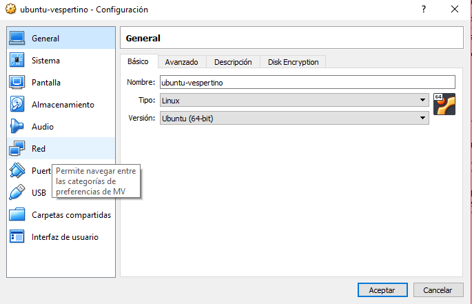

Para hacer esto pon el siguiente codigo:sudo apt update, te pedira la contraseña para esto.

Para esto pon el siguiente codigo:sudo apt upgrade

Para comprobar la tarjeta de red pon el siguiente codigo:

Debe salir algo asi, si no es asi has lo siguiente, apaga la maquina virtual y ve a configuracion

Luego ve a red
Por ultimo ve a adaptador 2, dale a "Habilitar adaptador de red", luego a "conectado a" y pon la opcion de Adaptador sólo-anfitrion, por ultimo en nombre pon "VirtualBox Host-Only Ethernet Adapter #3"

Para activar apache y mysql pon el siguiente codigo: sudo service ("apache2" y "mysql") start

Para comprobar el estado de los servicios activos pon el siguiente codigo: service --status-all | grep ("apache2" y "mysql"), si aparece con un signo + significa que esta activado pero si por contrario sale - es que aun no lo as activado

Para clonar el repositorio, muevete a la carpeta html con este comando: cd /var/www/html, una vez ahi pon el siguiente codigo: sudo git clone https://github.com/dgeti-cetis108/Programacion-M4S2-2018.git

una vez clonado cambiale el nombre a "library.com", pon el siguiente codigo para eso: sudo mv Programacion-M4S2-2018/ library.com

Para poner en uso la base de datos pon el siguiente codigo: cd library.com/db

pone el siguiente codigo: sudo nano library.sql, entraras al editor de archivos, pon USE `library`;, despues da a ("ctrl + o" y "ctrl + x")
ya que sales pon el siguiente codigo: cat library.sql, asi confirmas que guardamos los cambios
Para conectar el MySQL necesitamos permisos de administrador, para tener los permisos pon el siguiente codigo: sudo -i
ya que tengamos permisos root pon el siguiente codigo mysql
dentro de mysql pon el siguiente codigo source /var/www/html/library.com/db/library.sql, ya tenemos la base de datos pon el siguiente codigo: show databases;, eso nos mostrara la base de datos
Para crear un usuario pon el siguiente codigo: create user 'david'@'localhost' identified by '123';

tienes que dar permisos para poder configurar la base de datos, esto se hace con el siguiente codigo: grant all on library.* to 'usuario'@'localhost';

Antes de nada debes salir de mysql con el siguiente codigo: exit, tambien de el root con el siguiente codigo: exit
Para probar la conexion pon el siguiente codigo: mysql -u usuario -p =Es para probar la conexión
Para moverte pon el siguiente codigo: cd library.com/classes
Para cambiar el usuario y contraseña pon el siguiente codigo:
Aqui tenemos que editar el usuario y la contraseña a los que hicimos hace algunos momentos
Sale asi

Debe quedar asi

Para moverte pon el siguiente codigo: cd /etc/apache2/sites-available
Pon el codigo: sudo nano library.com.conf paraeditar el archivo y agregamos el siguiente codigo:
Pon los siguientes codigos para guardar y slir: Ctrl+O y Ctrl+X
Pon el siguientes codigos: sudo a2ensite library.com para hablilitar el dominio
Pon el codigo: systemctl reload apache2, Debe de aparecer lo siguiente: Site library.com already enabled
Pon este codigo para reiniciar el servicio de apache: sudo service apache2 restart
Pon el codigo: sudo nano /etc/host y agrega lo siguiente:
Pon los siguientes codigos para guardar y slir: Ctrl+O y Ctrl+X
Abre el Bloc de notas como administrador y abre el archivo Hosts que se encuentra en: C:\Windows\System32\drivers\etc
Agrega la ip de la red enp0s8 acompañada del dominio
Por ultimo pon library.com para ver si sale la aplicacion de iniciar sesion, si es asi ya as acabado.